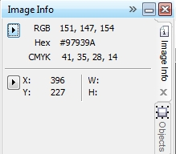
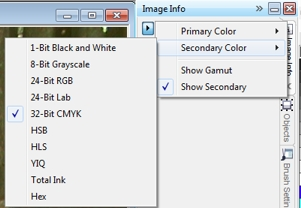
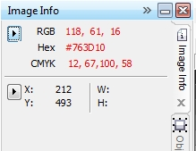
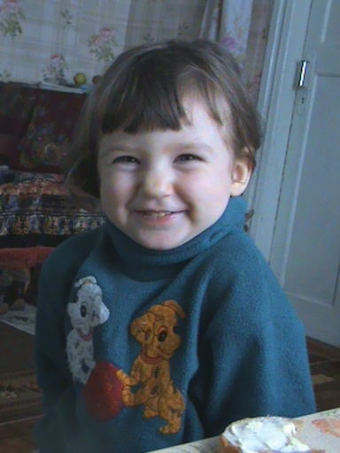
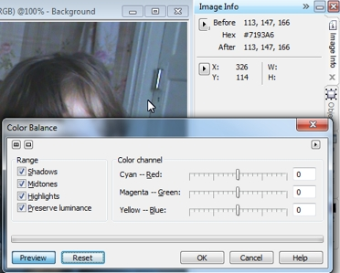
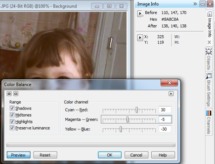
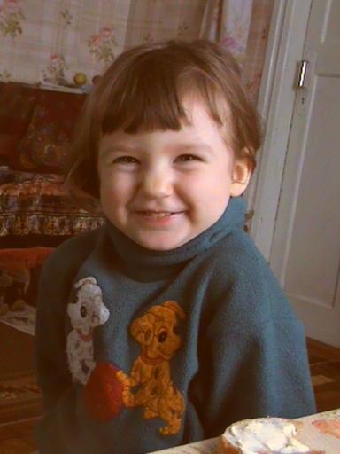
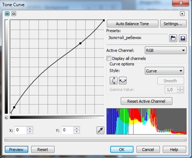
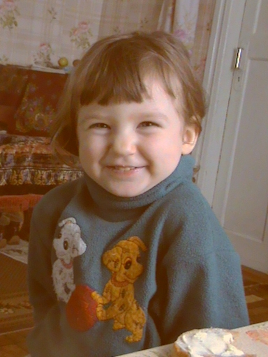
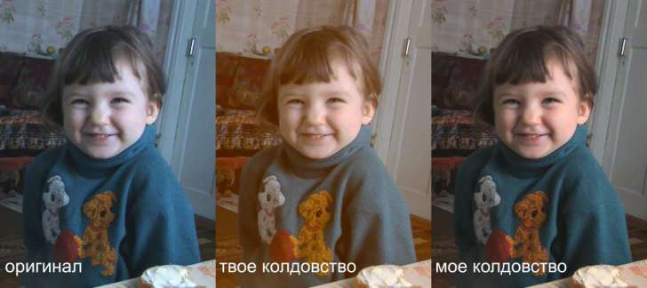

Докер Info в Photo-Paint
В этом уроке я хочу рассказать о докере Info в Photo-Paint и его применении.
Вообще говоря, при первом взгляде на докер Info (рис. 1), может показаться, что это какой-то «аппендицит» в программе, который никому не нужен.

Даже без лишних объяснений понятно, что это чисто «информационный докер», который показывает «справочную» информацию об изображении и не вносит абсолютно никаких изменений. Это может натолкнуть на ложный вывод, что это бесполезный докер, который пригодится в тех редких случаях, когда нужно будет узнать соответствие цвета RGB в модели CMYK. Но давайте не будем спешить с выводами и познакомимся с ним поближе.
Докер разделен на две области: вверху – область с информацией о цвете в точке изображения, где находится указатель мыши; внизу – область с информацией о текущих координатах мыши и размерами области. Значения W: (ширина) и H: (высота) появляются лишь в том случае, если вы нажав кнопку мыши, «обведете» какую-то область в изображении.
В каждой из областей имеется кнопка в виде треугольника, которая дает доступ к меню области докера (рис. 2).

В меню верхней области можно выбрать Primary Color (Первичный цвет) и Secondary Color (Вторичный цвет). Другими словами, вы можете выбрать то, что вы будете видеть в докере. Например, на рис. 1 видно, что в качестве Первичного цвета была выбрана модель RGB, а в качестве вторичного – цветовая модель CMYK. При наведении указателя мыши на какую-либо точку в изображении, в докере будут отображаться значения цвета в RGB и соответствующие значения того же цвета в модели CMYK. И как видно из рис. 1, значения RGB отображаются первыми, т. к. эта модель была выбрана в качестве Primary Color (Первичного цвета). Флажок Show Secondary (Показывать вторичный цвет) отвечает за то, будет ли отображаться в докере информация о цвете в значениях CMYK (или другой модели, выбранной в меню).
Флажок Show Gamut позволяет увидеть те цвета, которые не будут выводиться на печать. В этом случае, наведение указателя мыши на цвет, который не может быть напечатан, приведет к тому, что в докере значения этого цвета будут отображаться красным цветом (рис. 3).

На этом, казалось бы вся польза от этого докера закончилась. Но это не совсем так. Этот докер можно с успехом использовать при коррекции изображений. В этом случае, докер позволяет вам сориентироваться, какие изменения нужно внести в изображение. Ну и само собой разумеется, коррекция изображения ведется с помощью других фильтров, а докер Info (горячие клавиши Ctrl + F1) служит нам, как «подсказка».
Рассмотрим пример.
На рис. 4 показана фотография девочки, на которой невооруженным глазом виден излишний синий оттенок по всему изображению.

Чем нам может помочь в этой ситуации докер Info? Во многих случаях на фотографиях можно найти предметы или участки изображения, где присутствует известный нам цвет, который был на оригинале во время съемки. Самый подходящий вариант – это белый или нейтрально серый цвет. Т. к. белый цвет в значениях RGB: R = 255; G = 255; В = 255, а у серого цвета значения всех трех компонентов равны, то избыток или недостаток того или иного компонента будет сразу же виден в докере Info.
Посмотрев на фото, не трудно догадаться, что таким местом является дверь. Она окрашена белой краской. Понятно, что она не должна иметь на фото чисто «белоснежный» цвет, а скорее серый, близкий к белому. При наведении указателя мыши, на участок возле замочной скважины, в докере Info увидим следующие значения: R = 113; G = 147; В = 163. Вот эта информация, нам и нужна. Сразу же очевидно, что в изображении избыток синего и недостаток красного цвета, а также несколько низкое значение зеленого. Эту ситуацию исправим с помощью фильтра Color balance (Баланс цветов). Выполните команду Adjust > Color Balance (Настройка > Баланс цветов), чтобы открыть окно фильтра. На рис. 5 показано окно фильтра, указатель мыши в том месте, где брались значения цвета.

Обратите внимание на изменение в докере Info. Теперь появились значения цвета Before (До) и After (После) изменений. Это отличная подсказка при работе с фильтром. Изменяя баланс цветов, мы будем сразу же видеть изменение значений в докере, что предотвратит неправильный подбор значений в фильтре.
Изменим значения в окне фильтра, как показано на рис. 6.

Обратите внимание на значения в докере Info. Значения R, G, и В, практически стали равны (поле After (После)).
Я хочу сейчас чуть подробнее остановиться на моменте изменения значений в окне фильтра. Когда вы определитесь с точкой в изображении (в нашем случае у замочной скважины), которая будет «отправной точкой» для изменения значений параметров, вам придется поменять значения в окне фильтра. Скорее всего, для этого вы мышью переместите ползунки. Затем, чтобы узнать, как изменились значения цвета, вы не закрывая окно фильтра наведете указатель мыши на «исходную точку». И когда попробуете опять попасть мышью в эту «исходную точку», это может не получиться, и в докере Info будут отображаться уже другие значения. Вам придется каждый раз подгонять значения в фильтре, чтобы выровнять их значения. Когда вы будете это делать у себя на компьютере, вы поймете о чем я сейчас говорю.
Как этого избежать? Нужно чуточку позаниматься «мазохизмом», но так будет все равно проще. Порядок действий будет таков:
1. Определяетесь с точкой на изображении, которая будет служить для определения значений цвета (докер Info должен быть уже открыт). Наведите на эту точку указатель мыши и оставьте в этом положении.
2. Нажимаем Ctrl + Shift + B, чтобы вызвать окно фильтра Color balance (Баланс цветов).
3. При необходимости переключитесь на английскую раскладку клавиатуры. Нажимаем Alt + R, чтобы активировать параметр Cyan – Red. Станет активным поле, для ввода значения с клавиатуры. Введите значение и нажмите Alt + G, активировав параметр Magenta – Green (Пурпурный – Зеленый) и введите значение. И т. д.
4. Во время изменения значений, следите за показаниями в докере Info. Если нужно, повторите действия из пункта 3, пока в поле After (После) докера Info, значения R, G, и В не станут практически одинаковы.
5. В окне Color balance (Баланс цветов) щелкните ОК.
Вот, собственно и все «телодвижения». Результат применения изменений, показан на рис. 7.

Однако изображение остается немного темноватым. Исправим это с помощью фильтра Tone Curve (Цветовая кривая) (горячие клавиши Ctrl + T) (рис. 8).

Конечный результат показан на рис. 9.

Сравните результат с исходным изображением (рис. 4). Синий оттенок в изображении исчез (хотя из-за некачественного фото и наличия шумов, идеально не получилось). Конечно, для получения наиболее качественного результата, можно было бы еще повозиться с изображением, например, чуть подправить фильтром Selective color (Селективный цвет). Но цель этого урока – показать использование докера Info при работе с изображениями и случаи, когда использование этого докера весьма полезно.
В заключение можно сказать, что аналогичным образом можно избавляться от желтизны на фото, что также не редко случается на цифровых фотографиях.
ох барыга, ну ты и колдун!
запутал даже меня, столько отвлекающих и портящих картинку движений сделал что аж меня запутал :)
всего-то надо в светах убрать циан и добавить магенты с желтым :)))

я сделал через Ajust-Contrast Enhancement
ну тоесть в красном канале в инпуте уменьшил до 225 чтобы светлые точки стали краснее (и менее цианистей)
в зеленом наоборот в аутпуте уменьшил до 240 чтобы светлые точки стали менее зелеными (и более магентистей)
в синем в аутпуте уменьшил до 210 чтобы светлые точки стали менее синими (и более желтее)
светлить не надо, оно и так достаточно светлое. (да еще и такой загадочной кривой)
ты просто темных изображений не видел, где у чуваков канапушки из шума получаются.
вобщем Eyedropper тул - сила!
а Маргулис - полубог!
ну а чем вы там изменяете цветовой диапазон - кривыми, гистограммами или колор чанелом - неважно, есть много способов и все они ведут к одной цели.
вот только до сих пор нельзя в кореле оставить пипеточный замер в точке, как в шопе, а постоянно пиксельхантить - достает :(
mmgs! Кто ж Вам доктор, что Вы так легко путаетесь? :) Contrast Enhancement-ом...., по большому счету исправить можно еще тысячей способов. Урок был о докере Info, если Вы заметили :) А вот теперь объясните начинающему юзеру, откуда Вы взяли, какие значения надо выставить в Contrast Enhancement? Вам их "сорока на хвосте принесла"? А теперь насчет колдовства... :) Я не меняя ничего в "своем колдовстве", поменял цветовой профиль документа (согласен, моя бочина, что прохлопал этот момент) и вот результат.
Так что тут не "мое колдовство" виновато, а скорее моя невнимательность, что с профилем лоханулся :)
я ж написал, что пипетка - сила :)
как раз опираясь на пипетку и делал :)
ну тоесть замерял то ей, а гайки крутил по маргулису :)
с новым профилем стало чуть лучше, но все равно утопленница :(
при том что такое профилем не лечится - это вы в какой его засандалили?
а сохранять с ним же будете? а браузер поймет встроеный профиль или выбросит и отобразит в сргб?
Что касается профиля... Был по-умолчанию, т. е. sRGB IEС6 1966-2.1, а поменял на профиль своего монитора, конкретно - Samsung-Natural Color Pro 1.0 ICM.
ну ты шаман! еще и на профиль своего монитора! а он у тебя калиброваный или это штатный профиль?
маргулис в своем учении описывает методолгию работы с цветом.
тоесть я знаю какой канал и куда крутить чтобы добиться нужного эффекта.